手表端 · 410×502
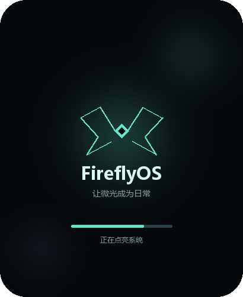
W01_boot 启动画面系统与外壳 W02_glance 一瞥息屏系统与外壳
W02_glance 一瞥息屏系统与外壳 W03_lock 锁屏系统与外壳
W03_lock 锁屏系统与外壳 W04_home_1 应用主页第1页系统与外壳
W04_home_1 应用主页第1页系统与外壳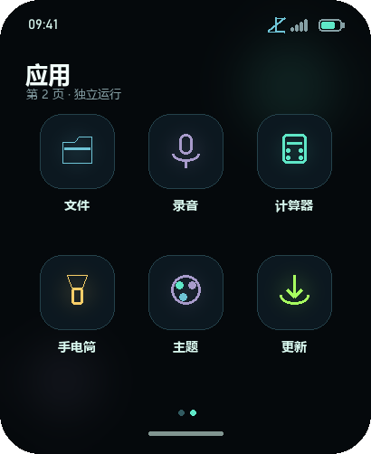
W05_home_2 应用主页第2页系统与外壳 W06_control_center 控制中心系统与外壳
W06_control_center 控制中心系统与外壳 W07_notifications 通知中心系统与外壳
W07_notifications 通知中心系统与外壳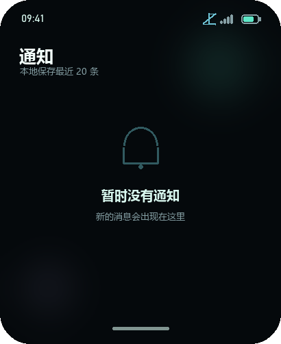
W08_notifications_empty 通知中心空状态系统与外壳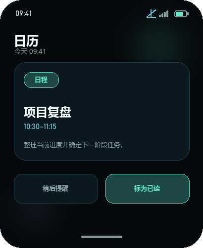
W09_notification_detail 通知详情系统与外壳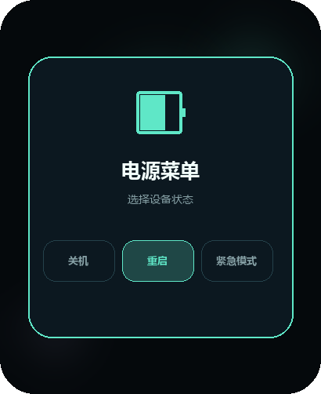
W10_power_menu 电源菜单系统与外壳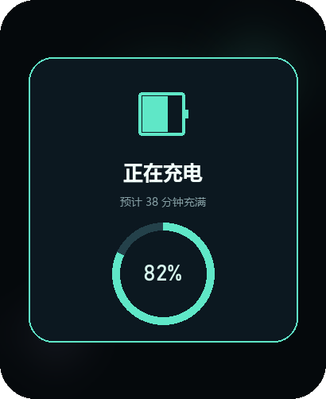
W11_charging 充电覆盖层系统与外壳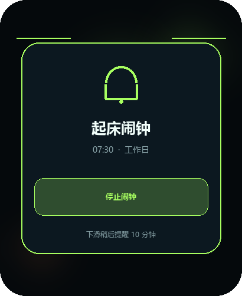
W12_alarm_ringing 闹钟响铃SAM高优先级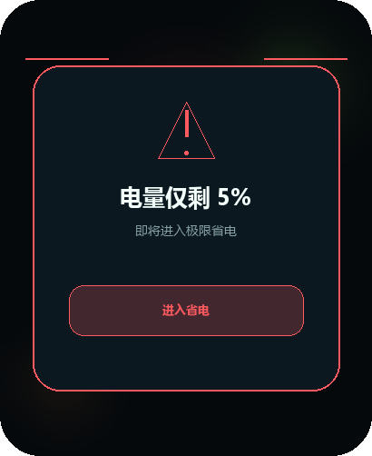
W13_critical_battery 严重低电量SAM高优先级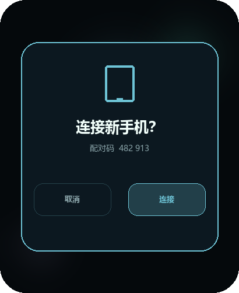
W14_pairing_confirm 手表配对确认连接与权限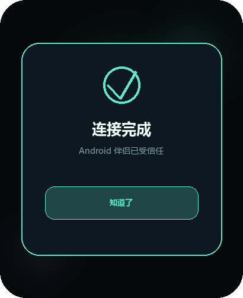
W15_pairing_result 配对成功连接与权限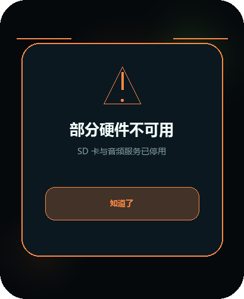
W16_hardware_degraded 硬件降级提示系统与外壳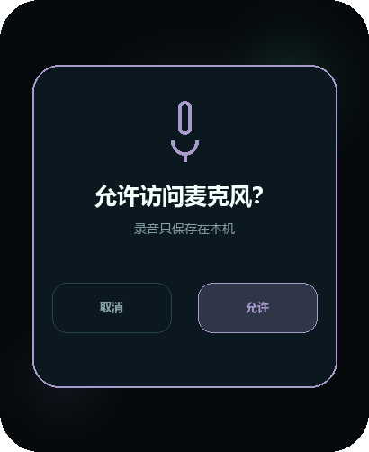
W17_permission_prompt 麦克风权限连接与权限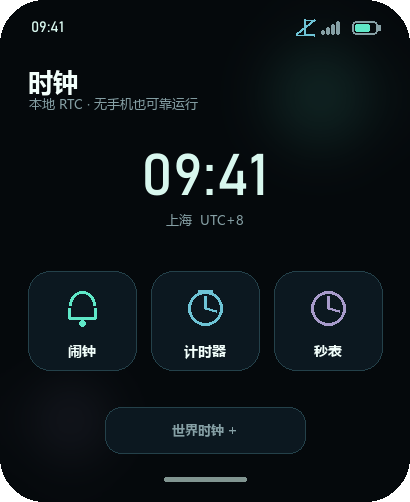
W18_clock_hub 时钟中心时钟与日程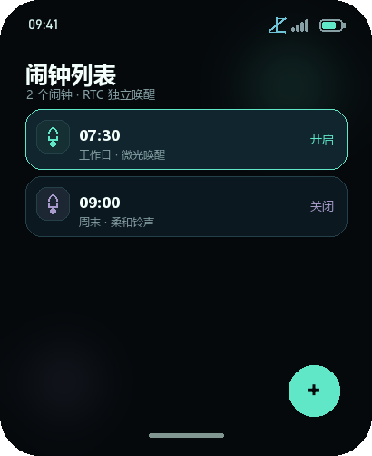
W19_alarm_list 闹钟列表时钟与日程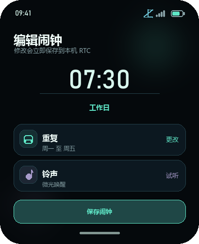
W20_alarm_editor 闹钟编辑时钟与日程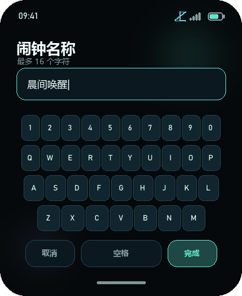
W21_alarm_keyboard 闹钟名称键盘时钟与日程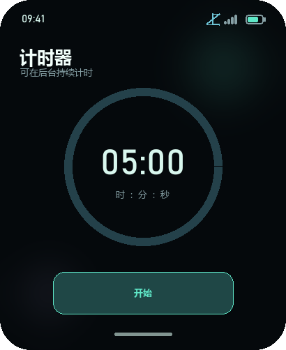
W22_timer_idle 计时器待机时钟与日程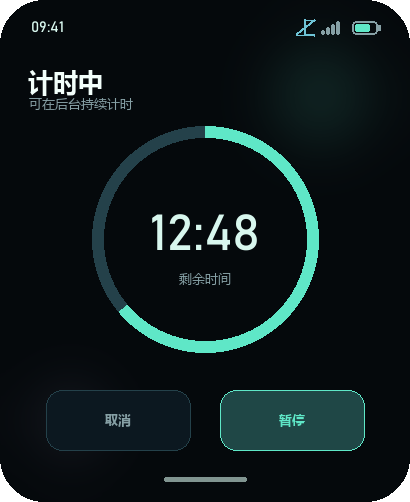
W23_timer_running 计时器运行时钟与日程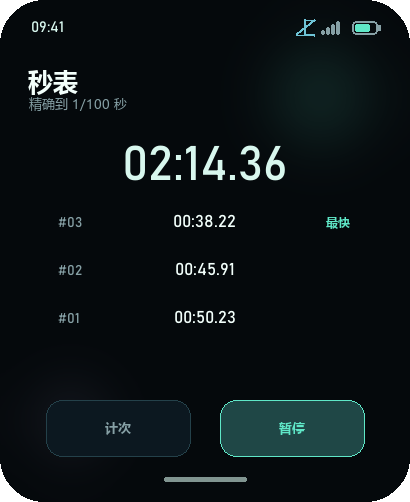
W24_stopwatch 秒表时钟与日程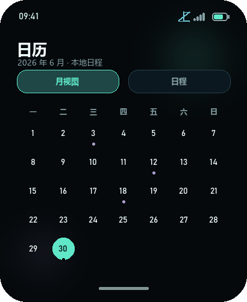
W25_calendar_month 日历月视图时钟与日程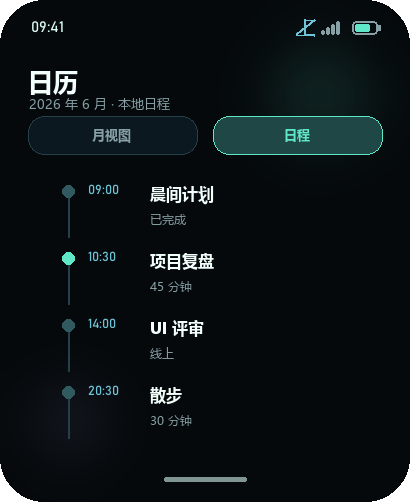
W26_calendar_agenda 日历日程视图时钟与日程 W27_settings_main 设置主页设置
W27_settings_main 设置主页设置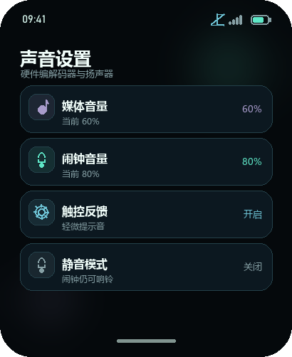
W28_settings_sound 声音设置设置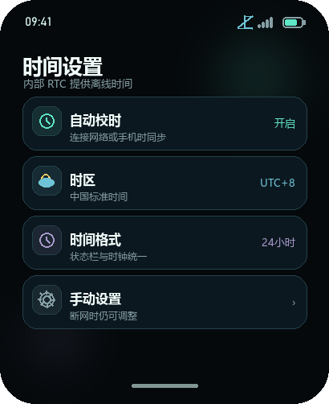
W29_settings_time 时间设置设置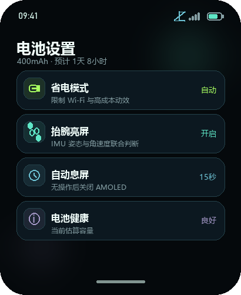
W30_settings_battery 电池设置设置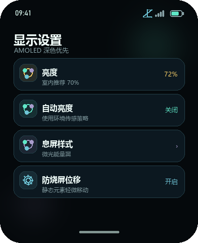
W31_settings_display 显示设置设置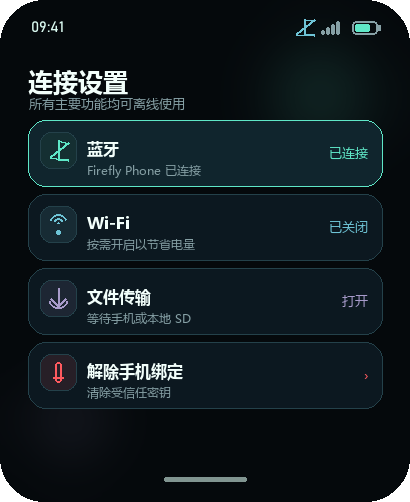
W32_settings_connectivity 连接设置设置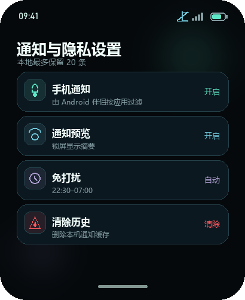
W33_settings_notifications 通知与隐私设置设置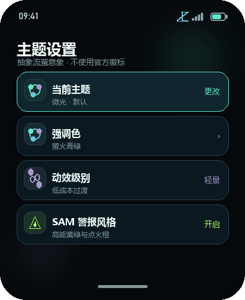
W34_settings_themes 主题设置设置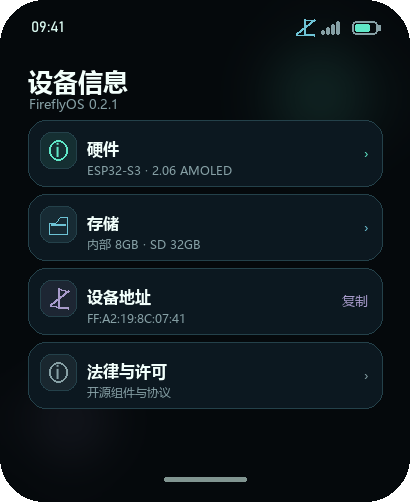
W35_device_info 设备信息设置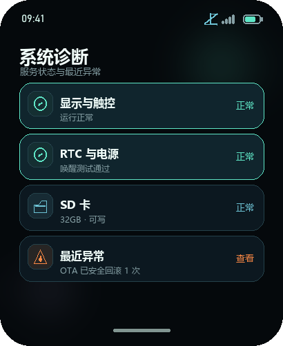
W36_diagnostics 系统诊断设置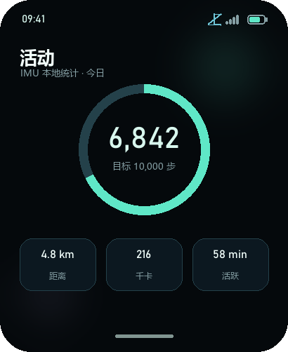
W37_activity_today 今日活动活动与工具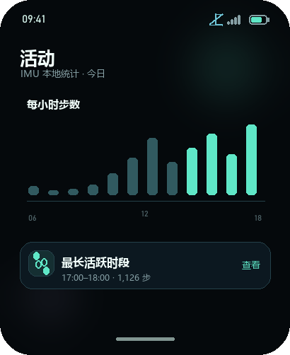
W38_activity_details 活动详情活动与工具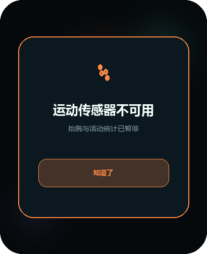
W39_motion_unavailable 运动传感器不可用活动与工具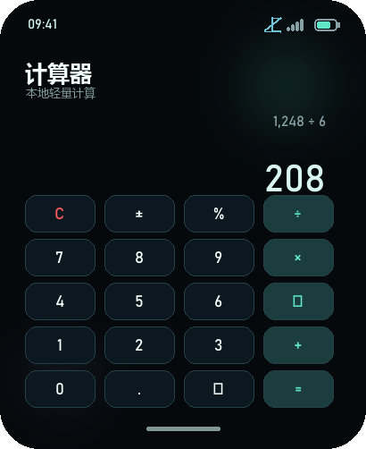
W40_calculator 计算器活动与工具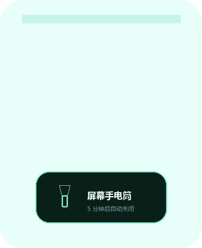
W41_flashlight 屏幕手电筒活动与工具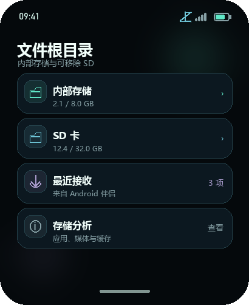
W42_files_root 文件根目录存储与媒体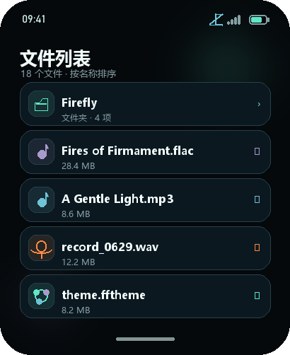
W43_files_list 文件列表存储与媒体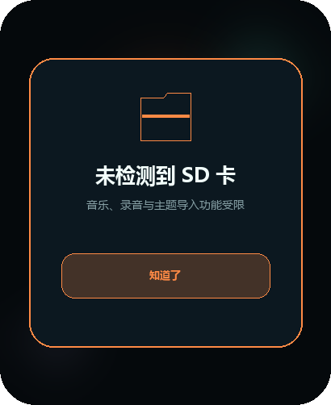
W44_sd_unavailable SD 卡不可用存储与媒体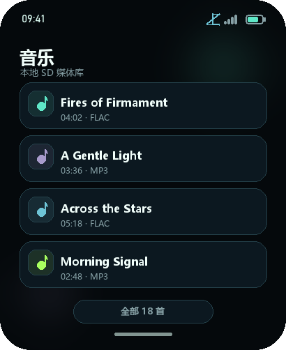
W45_music_library 音乐库存储与媒体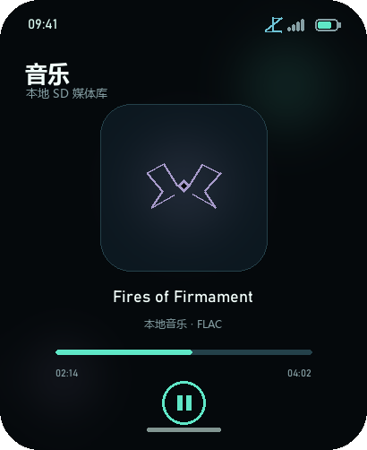
W46_music_now_playing 正在播放存储与媒体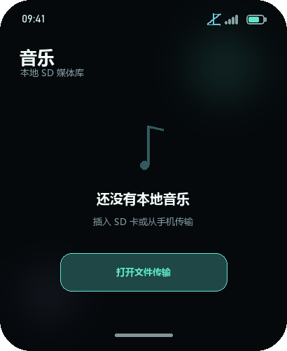
W47_music_empty 音乐空状态存储与媒体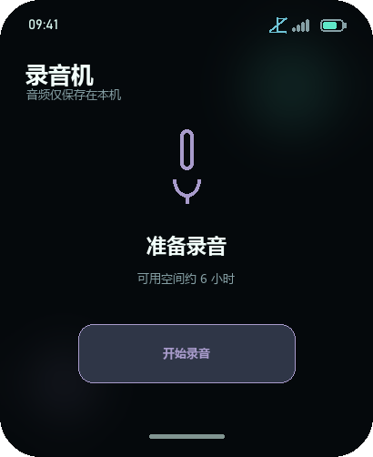
W48_recorder_idle 录音待机存储与媒体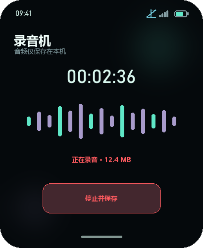
W49_recorder_recording 正在录音存储与媒体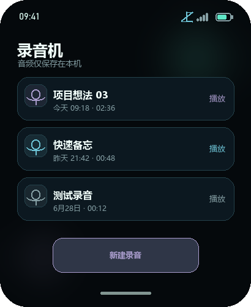
W50_recordings_list 录音列表存储与媒体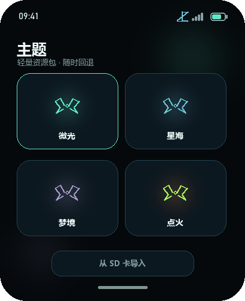
W51_themes_gallery 主题图库主题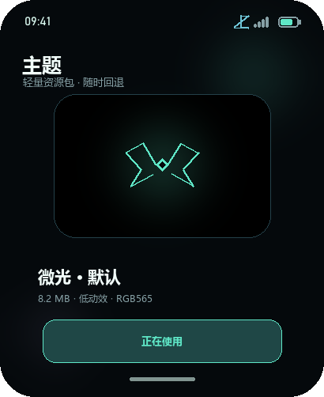
W52_theme_detail 主题详情主题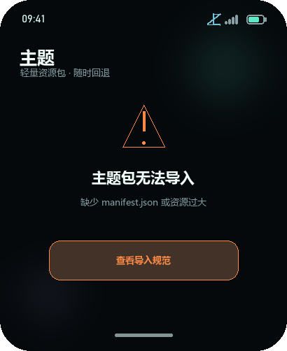
W53_theme_import_error 主题导入失败主题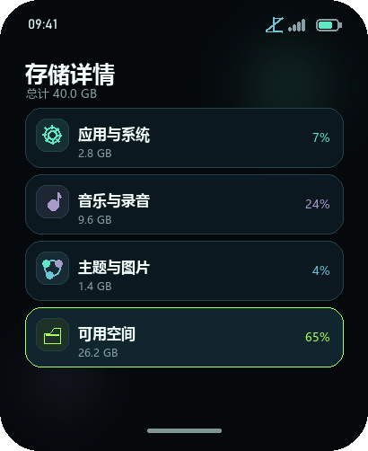
W54_storage_info 存储详情存储与媒体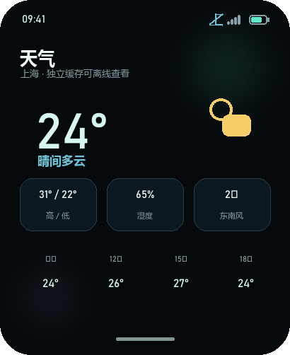
W55_weather_fresh 天气正常网络服务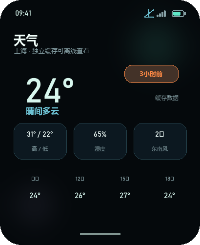
W56_weather_stale 天气缓存过期网络服务W57_weather_no_location 天气无城市网络服务W58_wifi_provision Wi-Fi 配网网络服务W59_transfer_receiving 文件接收连接与传输W60_update_available 发现更新系统更新W61_update_download 下载更新系统更新W62_update_installing 安装更新系统更新W63_update_rollback 更新回滚系统更新W64_find_watch 查找手表SAM高优先级W65_factory_reset 恢复出厂确认系统与外壳W66_low_memory 低内存保护SAM高优先级Android 伴侣端 · 432×960
A01_welcome 欢迎与未连接首次连接A02_device_scan 扫描设备首次连接A03_pairing_code 配对码确认首次连接A04_dashboard_connected 已连接仪表盘设备A05_dashboard_offline 离线仪表盘设备A06_notification_permission 通知权限引导通知A07_notification_filter 通知应用筛选通知A08_settings_sync 设备同步设置设置A09_theme_manager 主题管理主题A10_weather_city 天气城市天气A11_calendar_permission 日历同步权限日历A12_media_remote 媒体遥控媒体A13_find_device 查找设备设备A14_wifi_provision Wi-Fi 配网网络A15_transfer_manager 传输管理传输A16_update_available 固件更新可用更新A17_update_progress 固件更新传输更新A18_unbind_confirm 解除绑定确认设备